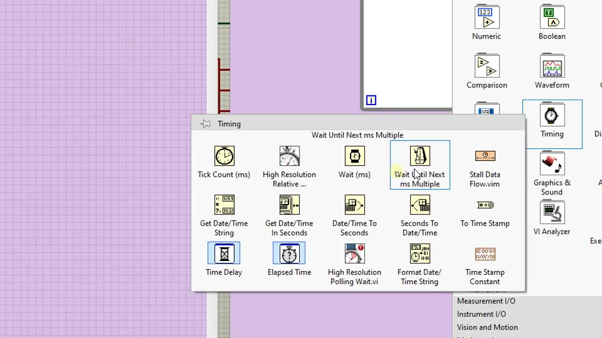

En el .ioc activa USART1 en modo Asynchronous a 9600 baudios, 8 bits, sin paridad, 1 bit de parada.
Si quieres moverla a otros pines, mantén Ctrl presionado y haz clic sobre el pin para ver las alternativas (remapeo).
En esta clase en vivo configuramos la USART1 del STM32 en modo asíncrono, agregamos la librería uart.c/uart.h y enviamos texto. Luego lo llevamos a Proteus con COMPIM hacia el puerto Bluetooth del PC (COM10) y lo recibimos en una app de terminal Bluetooth en el celular. Después creamos un puente de puertos virtuales para conectar Proteus con Hercules, y finalmente armamos en LabVIEW un lector VISA que separa el texto "temp=xx.xx/" y muestra el valor en un termómetro.

En el .ioc activa USART1 en modo Asynchronous a 9600 baudios, 8 bits, sin paridad, 1 bit de parada.
Si quieres moverla a otros pines, mantén Ctrl presionado y haz clic sobre el pin para ver las alternativas (remapeo).
Copia la carpeta con uart.c y uart.h dentro del proyecto.
Agrégala a la ruta de includes (Properties → C/C++ Build → Settings → Include paths) para que el compilador la encuentre.
Si el compilador dice que no encuentra uart.h, revisa que la carpeta esté en los include paths del proyecto.
En el while(1) envía un texto con salto de línea y un retardo para no saturar el puerto.
#include "uart.h"
while (1)
{
uartx_write_text(&huart1, "Hola\r\n");
HAL_Delay(1000);
}En la configuración de Bluetooth de Windows, en Puertos COM, crea un puerto entrante. En la clase quedó como COM10.
Ese es el puerto que usará Proteus para hablar por Bluetooth.
Coloca el COMPIM y conéctalo sin cruzar: TX del micro con TX del COMPIM y RX con RX (el COMPIM ya representa el otro extremo).
Physical port: COM10, Physical baud 9600 y Virtual baud 9600, igual que la USART.
Las dos velocidades (física y virtual) deben coincidir con la USART. Si una queda en 2400, llegarán caracteres basura.
Empareja el celular con el PC y abre una app de terminal Bluetooth.
Conéctate al PC y verás llegar el texto que envía el STM32 simulado.
Con el software de puertos seriales virtuales crea un par local, por ejemplo COM1–COM2. Lo que entra por uno sale por el otro.
Proteus (COMPIM) se conecta a un extremo y Hercules al otro, ambos a 9600.
Cada par solo admite dos programas, uno en cada extremo. Si LabVIEW va a leer, cierra Hercules primero.
En Tools → Options → Environment activa "Automatically close VISA sessions" para que el puerto se libere al detener el VI.
Coloca VISA Configure Serial Port, crea un control para el nombre del recurso (VISA resource name) y una constante de 9600 para la velocidad.
Si es necesario, desactiva el carácter de terminación (termination char enable en False).
Dentro de un While Loop usa una Property Node con Bytes at Port y conéctala al byte count de VISA Read.
Muestra la salida en un indicador "read buffer".
Regula el ciclo con Wait Until Next ms Multiple (en la clase 1200 ms). Lee más rápido de lo que envía el micro (Nyquist) para no perder datos.
Fuera del ciclo conecta VISA Close y Clear Errors, y pon un botón de Stop para salir del While Loop.
Declara un buffer de texto e incluye stdio.h y string.h.
Incrementa una variable float y la envías con un formato fijo que termina en '/' para separar los datos.
#include <stdio.h>
#include <string.h>
char texto[30];
float temp = 20.0;
while (1)
{
temp += 0.2;
sprintf(texto, "temp=%.2f/", temp);
uartx_write_text(&huart1, texto);
HAL_Delay(1000);
}Para imprimir float con sprintf en CubeIDE activa "Use float with printf from newlib-nano" en las opciones del linker.
Usa un Match Pattern con "temp=" para quedarte con lo que viene después.
Aplica otro Match Pattern con "/" y toma la salida "before substring": ese es el número.
Convierte el texto con Fract/Exp String To Number y pon "use system decimal point" en False para que tome el punto como decimal.
Conéctalo a un Thermometer y activa Visible Items → Digital Display para ver también el valor.
Corre la simulación y el VI: el termómetro sube 0.2 cada segundo con el valor que envía el STM32.